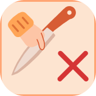

Плов
ГорячееСложность: Средне
Подготовка: 40 минГотовка: 80 минВсего: 120 мин
Рассыпчатый плов с мясом в казане: правильный зирвак, рис, который не слипается, и ароматный чеснок в центре.
Нажимайте на шаги и продукты, чтобы отмечать готовое.
Ингредиенты
- Говядина или баранина700 г
- Рис длиннозёрный500 г
- Морковь500 г
- Лук400 г
- Чеснок1 головка
- Растительное масло150 мл
- Зира1 ч. л.
- Сушёный барбарис1 ст. л.
- Соль2 ч. л.
- Кипяток700 мл
Приготовление
- Промойте рис 5–6 раз, пока вода не станет прозрачной. Замочите в тёплой солёной воде на 30–40 минут.
- Нарежьте мясо кусками по 3–4 см, морковь соломкой, лук полукольцами.
- Разогрейте казан с маслом до лёгкого дымка и обжарьте мясо 8–10 минут до корочки.
- Добавьте лук и жарьте 5 минут до золотистого цвета, затем добавьте морковь и жарьте ещё 7 минут.
- Посолите, добавьте зиру и барбарис, влейте 300 мл кипятка. Томите зирвак (основу плова) 30 минут на слабом огне.
- Слейте воду с риса и выложите его ровным слоем, не перемешивая. Влейте оставшийся кипяток так, чтобы он был на 1–1,5 см выше риса. Воткните в центр головку чеснока.
- Варите на сильном огне без крышки, пока вода не выпарится. Затем соберите рис горкой, проколите в нескольких местах, накройте крышкой и томите 20 минут на минимальном огне.
- Выключите и оставьте на 10 минут, затем аккуратно перемешайте и выложите на блюдо.

Совет. После закладки риса не мешайте плов, иначе зёрна слипнутся и получится каша. Вливайте воду осторожно: масло горячее и может брызгать.